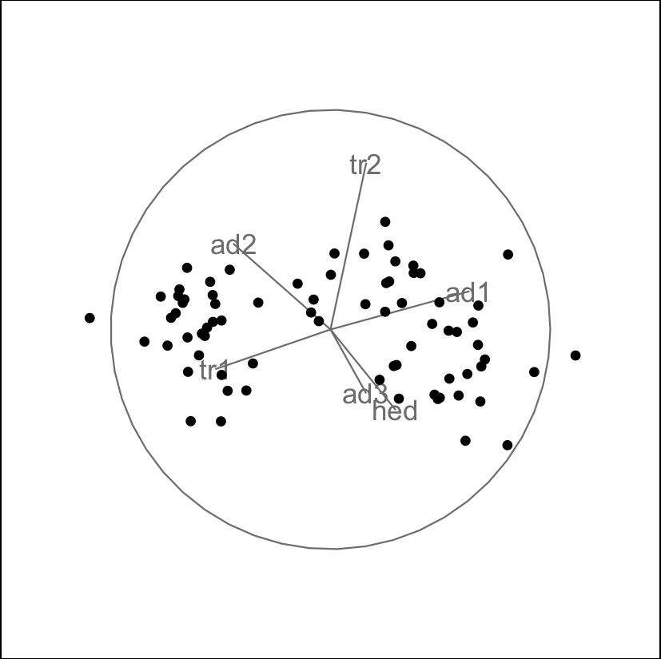
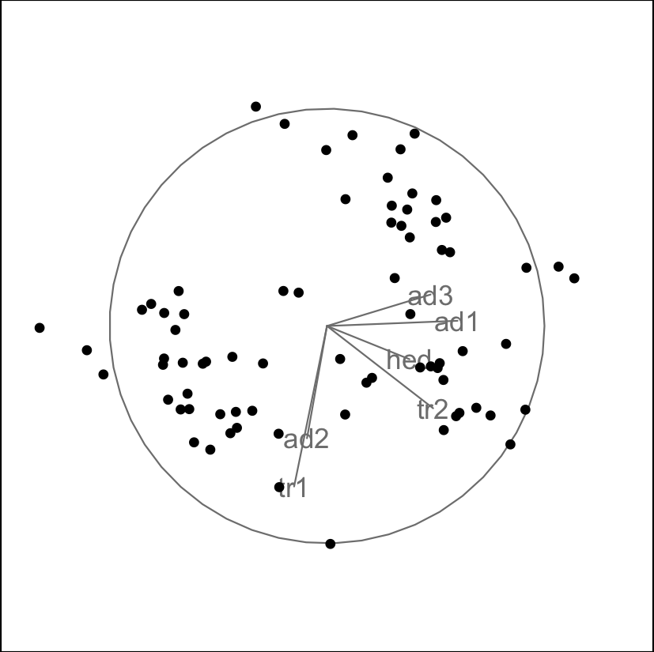
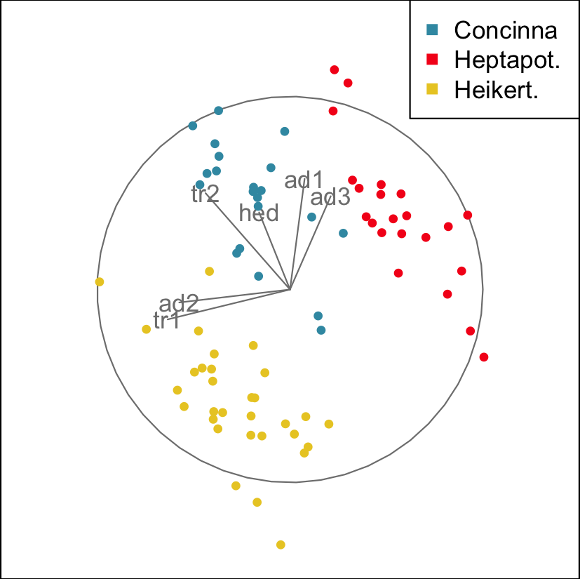
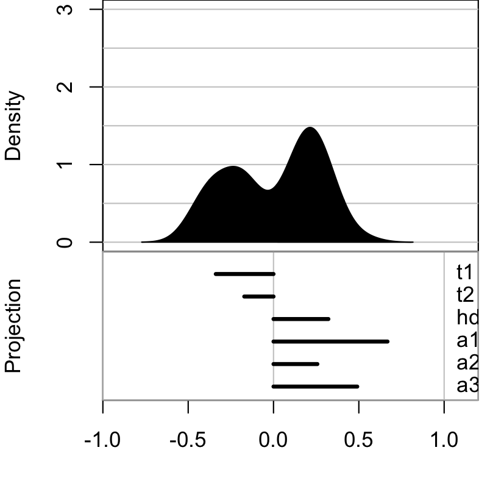

A tour animates a display of interpolated low-dimensional projections from high-dimensional data, to explore the shape of the multivariate distribution. The shape might be elliptical if the distribution is roughly normal, or there may be clusters corresponding to grouping the data according to known or unknown variables. There might be outliers, the can be identified because they are separated from the other observations, or move on different paths that other points. It may be that there are curvilinear patterns indicating nonlinear association between some variables.
This vignette shows how to use the tourr package to
generate animations using different tour and display types.
Quick start
To get started we can simply generate a tour animation for any numeric data matrix with default settings. Here we look at the flea data available in the package, drop the last column (the grouping variable), and call
animate(flea[,1:6])
Here we only see a single frame that is generated on the tour path,
but if you call animate in your console you will launch a
tour animation that you can view in your graphics window.
We could have also launched the same tour by specifying the default selection explicitly
animate(flea[,1:6],
tour_path = grand_tour(),
display = display_xy()
)The most common application is to use a grand tour, which means that the projections (or bases) are randomly selected and give a global overview of the distribution. The default display is a two-dimensional scatterplot display.
Tour types
As we have seen, the default tour type is a grand tour. By selecting
the second argument, tour_path, in the animate function we
can change this, choosing from the tour types that have been implemented
in the package. The most relevant options are:
- grand tour: randomly selected bases
- guided tour: basis selection is optimising an index function
- planned tour: interpolates between a set of input bases
- little tour: a planned tour between all axis parallel projections
- local tour: alternating between the starting projection and randomly selected nearby projections
- slice tour: points outside a given orthogonal distance of the projection plane appear smaller.
- sage tour: reverse the curse of dimensionalityt piling, in the 2D projection
For example, the guided tour can be used to move towards more
interesting views of the distribution as the animation progresses. To
measure the interestingness of each projection we need to define an
index function which will get maximised along the tour path. You can
define your own index function, or use one of those available in the
tourr package. For our example flea data we can use the
holes index which is looking for projections with low densities near the
center, and can often find views that reveal clustering.
animate(flea[,1:6],
tour_path = guided_tour(holes()),
display = display_xy())Converting input data to the required matrix format.
Press Esc to stop tour running
Target: 0.733, 17.5% better
Using half_range 4.4
Target: 0.872, 19.0% better
Target: 1.106, 26.8% better
Target: 1.243, 12.3% better
Target: 1.245, 0.2% better
Target: 1.258, 1.1% better
Target: 1.261, 0.2% better
Target: 1.268, 0.6% better
Target: 1.271, 0.2% better
Target: 1.272, 0.1% better
Target: 1.273, 0.1% better
Target: 1.276, 0.2% better
Target: 1.278, 0.1% better
No better bases found after 25 tries. Giving up.
Final projection:
-0.151 -0.738
0.488 -0.378
0.379 -0.153
0.600 0.024
-0.092 -0.516
0.476 0.145 
When running the full guided tour for this example, feedback on the optimisation is provided in the console, and the final view shows three clusters (not very separated) that correspond to the three species in the dataset. A random start is used be default, which will produce different results each run. To get the same result repeatedly, you need to set the seed. By mapping the species to color we can see how the groups get teased apart in the guided tour.
animate(flea[,1:6],
tour_path = guided_tour(holes()),
display = display_xy(col = flea$species))
Alternatively, a colour vector can be created manually and passed into the guided tour.
# defining the color palette
clrs <- c("#486030", "#c03018", "#f0a800")
# mapping the species vector onto a color vector
flea_col <- clrs[as.numeric(flea$species)]
# the color vector specifies the color for each point
# and gets passed into the display function
animate(flea[,1:6],
tour_path = guided_tour(holes()),
display = display_xy(col = flea_col))Display types
The default display is showing a scatterplot of the data projected to 2D. Depending on the number of dimensions we project onto (this is called ), we can choose different display types. For example, we could look at 1D projections in a density display, a 3D projection using depth cues, or higher dimensional projections in a parallel coordinate or scatterplot matrix display.
When changing the display type via the display argument,
we need to make sure that the basis generation is matching the
corresponding number of dimensions
.
We can pass in this information when generating the tour path. To work
with 1D projections and a density display, we can launch the animation
as
animate(flea[,1:6],
tour_path = grand_tour(d = 1),
display = display_dist()
)but there is also a shortcut available
animate_dist(flea[,1:6])
Saving a tour
After exploring the different options, we may have identified a particularly interesting tour that we may want to save or share.
The first option is to save the animation (or its individual frames).
This is possible through the render functions, that save
the frame views to png or pdf format. Another option, perhaps more
convenient, is to directly save the full animation to a gif file. To use
the function, you will need to install the gifski
package.
An advanced alternative is to save the tour path, which can later be replayed as a planned tour, and allows us to look at the same tour in different displays. For example we can save a default grand tour path for the flea data and then replay it in a scatterplot display
t1 <- save_history(flea[,1:6], max = 3)
animate(flea[,1:6], planned_tour(t1))